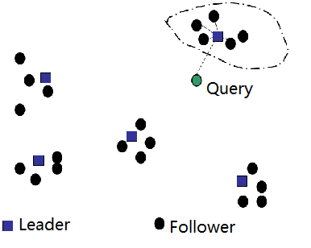

问答机器人的召回
目标
- 知道召回的目的
- 能够说出召回的流程
- 能够优化基础的召回逻辑
1. 召回的流程
流程如下：
- 准备数据，问答对的数据等
- 问题转化为向量
- 计算相似度
2. 对现有问答对的准备
这里说的问答对，是带有标准答案的问题，后续命中问答对中的问题后，会返回该问题对应的答案
为了后续使用方便，我们可以把现有问答对的处理成如下的格式，可以考虑存入数据库或者本地文件：
{
"问题1":{
"主体":["主体1","主体3","主体3"..],
"问题1分词后的句子":["word1","word2","word3"...],
"答案":"答案"
},
"问题2":{
...
}
}
代码如下：
# lib/get_qa_dcit.py
def get_qa_dict():
chuanzhi_q_path = "./问答对/Q.txt"
chuanzhi_a_path = "./问答对/A.txt"
QA_dict = {}
for q,a in zip(open(chuanzhi_q_path).readlines(),open(chuanzhi_a_path).readlines()):
QA_dict[q.strip()] = {}
QA_dict[q.strip()]["ans"] = a.strip()
QA_dict[q.strip()]["entity"] = sentence_entity(q.strip())[-1]
#准备短问答的问题
python_duan_path = "./data/Python短问答-11月汇总.xlsx"
ret = pd.read_excel(python_duan_path)
column_list = ret.columns
assert '问题' in column_list and "答案" in column_list, "excel 中必须包含问题和答案"
for q, a in zip(ret["问题"], ret["答案"]):
q = re.sub("\s+", " ", q)
QA_dict[q.strip()] = {}
QA_dict[q.strip()]["ans"] = a
cuted,entiry = sentence_entity(q.strip())[-1]
QA_dict[q.strip()]["entity"] = entiry
QA_dict[q.strip()]["q_cuted"] = cuted
return QA_dict
QA_dict = get_qa_dict()
3. 把问题转化为向量
把问答对中的问题，和用户输出的问题，转化为向量，为后续计算相似度做准备。
这里，我们使用tfidf对问答对中的问题进行处理，转化为向量矩阵。
TODO，使用单字，使用n-garm，使用BM25，使用word2vec等，让其结果更加准确
from sklearn.feature_extraction.text import TfidfVectorizer
from lib import QA_dict
def build_q_vectors():
"""对问题建立索引"""
lines_cuted= [q["q_cuted"] for q in QA_dict]
tfidf_vectorizer = TfidfVectorizer()
features_vec = tfidf_vectorizer.fit_transform(lines_cuted)
#返回tfidf_vectorizer，后续还需要对用户输入的问题进行同样的处理
return tfidf_vectorizer,features_vec，lines_cuted
4. 计算相似度
思路很简单。对用户输入的问题使用tfidf_vectorizer进行处理，然后和features_vec中的每一个结果进行计算，获取相似度。
但是由于耗时可能会很久，所以考虑使用其他方法来实现
4.1 pysparnn的介绍
官方地址：https://github.com/facebookresearch/pysparnn
pysparnn是一个对sparse数据进行相似邻近搜索的python库，这个库是用来实现 高维空间中寻找最相似的数据的。
4.2 pysparnn的使用方法
pysparnn的使用非常简单，仅仅需要以下步骤，就能够完成从高维空间中寻找相似数据的结果
- 准备源数据和待搜索数据
- 对源数据进行向量化，把向量结果和源数据构造搜索的索引
- 对待搜索的数据向量化，传入索引，获取结果
import pysparnn.cluster_index as ci
from sklearn.feature_extraction.text import TfidfVectorizer
#1. 原始数据
data = [
'hello world',
'oh hello there',
'Play it',
'Play it again Sam',
]
#2. 原始数据向量化
tv = TfidfVectorizer()
tv.fit(data)
features_vec = tv.transform(data)
# 原始数据构造索引
cp = ci.MultiClusterIndex(features_vec, data)
# 待搜索的数据向量化
search_data = [
'oh there',
'Play it again Frank'
]
search_features_vec = tv.transform(search_data)
#3. 索引中传入带搜索数据，返回结果
cp.search(search_features_vec, k=1, k_clusters=2, return_distance=False)
>> [['oh hello there'], ['Play it again Sam']]
使用注意点：
- 构造索引是需要传入向量和原数据，最终的结果会返回源数据
- 传入待搜索的数据时，需要传入一下几个参数：
search_features_vec：搜索的句子的向量k:最大的几个结果，k=1，返回最大的一个k_clusters:对数据分为多少类进行搜索return_distance:是否返回距离
4.3 使用pysparnn完成召回的过程
#构造索引
cp = ci.MultiClusterIndex(features_vec, lines_cuted)
#对用户输入的句子进行向量化
search_vec = tfidf_vec.transform(ret)
#搜索获取结果，返回最大的8个数据，之后根据`main_entiry`进行过滤结果
cp_search_list = cp.search(search_vec, k=8, k_clusters=10, return_distance=True)
exist_same_entiry = False
search_lsit = []
for _temp_call_line in cp_search_list[0]:
cur_entity = QA_dict[_temp_call_line[1]]["main_entity"]
if len(set(main_entity) & set(cur_entity))>0: #命名体的集合存在交集的时候返回
exist_same_entiry = True
search_lsit.append(_temp_call_line[1])
if exist_same_entiry: #存在相同的主体的时候
return search_lsit
else:
# print(cp_search_list)
return [i[1] for i in cp_search_list[0]]
在这个过程中，需要注意，提前把cp,tfidf_vec等内容提前准备好，而不应该在每次接收到用户的问题之后重新生成一遍，否则效率会很低
4.4 pysparnn的原理介绍
参考地址：https://nlp.stanford.edu/IR-book/html/htmledition/cluster-pruning-1.html
前面我们使用的pysparnn使用的是一种cluster pruning(簇修剪)的技术，即，开始的时候对数据进行聚类，后续再有限个类别中进行数据的搜索，根据计算的余弦相似度返回结果。
数据预处理过程如下：
- 随机选择$\sqrt{N}$个样本作为leader
- 选择非leader的数据(follower),使用余弦相似度计算找到最近的leader
当获取到一个问题q的时候，查询过程：
- 计算每个leader和q的相似度，找到最相似的leader
- 然后计算问题q和leader所在簇的相似度，找到最相似的k个，作为最终的返回结果

在上述的过程中，可以设置两个大于0的数字b1和b2
- b1表示在
数据预处理阶段，每个follower选择b1个最相似的leader，而不是选择单独一个lader，这样不同的簇是有数据交叉的； - b2表示在查询阶段，找到最相似的b2个leader，然后再计算不同的leader中下的topk的结果
前面的描述就是b1=b2=1的情况，通过增加b1和b2的值，我们能够有更大的机会找到更好的结果，但是这样会需要更加大量的计算。
在pysparnn中实例化索引的过程中
即：ci.MultiClusterIndex(features, records_data, num_indexes)中，num_indexes能够设置b1的值，默认为2。
在搜索的过程中，cp.search(search_vec, k=8, k_clusters=10, return_distance=True,num_indexes)，num_Indexes可以设置b2的值，默认等于b1的值。